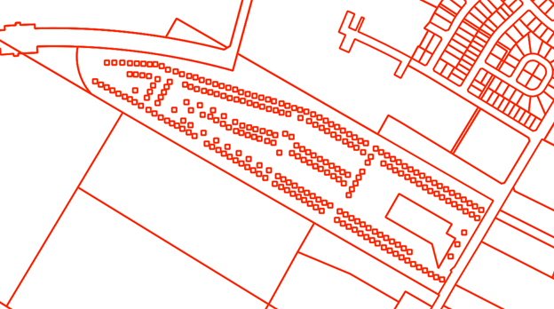
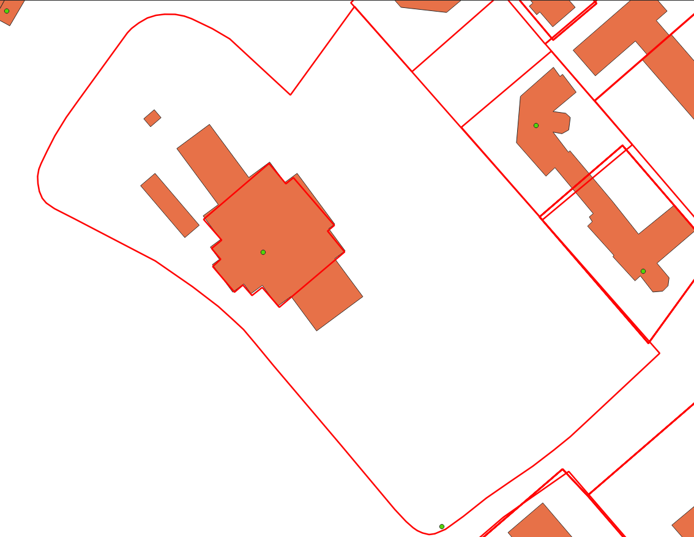

Step 1: Data Preparation#
There are three key layers that must be ingested, cleaned, and prepped before matching can begin. The composition of these input files varies widely by jurisdiction so to a certain degree this process will vary slightly from region to region in order to compensate for these differences. The three key layers are:
Building Polygons
Address Points
Parcel Fabric
Note
Building Polygon is the term used to describe building data rather than the more commonly used building footprints. The primary reason for this difference is that a building footprint might only conform to the roof area of a building whereas a building polygon should encompass the entire area of a structure.
All three of these layers must be available in order to create address to building matches under the current process. Initially all three layers are loaded into geodataframes for cleaning.
# Load the key datasets into geodataframes
# linking_data == parcel_fabric
linking_data = gpd.read_file(linking_data_path, layer=linking_lyr_nme, linking_ignore_columns=linking_ignore_columns, mask=aoi_gdf)
addresses = gpd.read_file(ap_path, layer=ap_lyr_nme, mask=aoi_gdf)
footprint = gpd.read_file(footprint_lyr, layer=footprint_lyr_name ,mask=aoi_gdf)
The following sections describe the individual processes used to clean the three key datasets.
Parcel Fabric Cleaning#
The following cleaning/preparation processes are applied to the raw parcel data in order to prepare for matching:
Micro Parcel detection/removal
Linkage field selection/calculation
Micro Parcel Detection/Removal#
Micro parcels are small parcels with an area smaller than 100m2. These parcels are most often located in trailer parks and condo developments. These only complicate the matching process when included and are removed at this stage.
{kind=link}
In the image above there are many micro parcels in a single much larger parcel. In general, these parcels have an area of >100m2 and so can easily be filtered out using the following code:
linking_data['AREA'] = linking_data['geometry'].area
linking_data = linking_data[linking_data['AREA'] > 101]
Linkage Field Selection/Calculation#
The linkage field is a field in the parcel fabric that will be used when joining the parcels to the address points and the building polygons. If a viable option exists then it is possible to use a pre-existing field from the dataset. However, it needs to meet certain criteria:
There must be no NULL values
There must be a unique value for every record with no repetitions
If no viable field exists in the base data then a new field can be calculated. This in its simplest form is a unique integer value for each parcel. More complex processes are available if retaining the value for use after matching however, in this documentation we will be using a simple unique integer for example purposes.
linking_data['link_field'] = range(1, len(linking_data.index)+1)
Address Points Cleaning#
The following processes are applied to the raw address point data in preparation for matching:
Parcel Linkage
Parcel Linkage for Address Points#
Parcel linkage is the process of adding the linking field for a parcel to a building polygon if it intersects a parcel. The main criterion for this is to link each building with the smallest intersecting parcel.
There can only be one linkage between parcel data and the address points. In cases where the address point intersects multiple parcels use the polygon with the smaller area. The polygon with the smaller area is more likely to correspond to a lot rather than a whole property. For example, there are often cases where a lot for a building is within the parcel for the building as well as the entire property. In that case, we want to grab the smallest parcel possible as matching results are the most likely to be accurate in those cases.
{kind=link}
Building Polygon Cleaning#
The following cleaning/preparation processes are applied to the raw building polygon data in order to prepare for matching:
Parcel Linkage
Non-Addressable Outbuilding Detection
Parcel Linkage for Building Polygons#
Parcel Linkages are made similarly to the way they are made for address points with minor changes in workflow.
Building polygons are converted to representative points to allow for the creation of the spatial jurisdiction
If a building intersects more than one polygon then the smallest acceptable polygon is taken as the linkage.
Representative Point A representative point is an arbitrary point within a polygon. The key feature of this point is that it will always be contained within the bounds of a polygon regardless of its complexity. This is different from a centroid which is always located at the centre of the polygon regardless of if it actually sits within the bounds of that polygon or not.
Unaddressable Out-Building Detection#
A building is considered to be an unaddressable outbuilding when one or more of the following criteria are met:
The footprint has an area of less than 50m2 and there is at least one other building greater than 50m2 in the same parcel,
The area of the building is between 50m2 and 100m2 and the number of buildings is greater than the number of address points in the parcel To perform this process the following steps are followed:
Use groupby to get the counts of address points and building polygons for each parcel
All building polygons that are in a parcel where there is only one building or only one address point are dropped from this process as unaddressable outbuildings cannot be identified in those cases
If the number of buildings is greater than or equal to the bp threshold for a given parcel then only remove buildings >50m2
Of the remaining buildings flag all those that are below the minimum addressable threshold
Of the remaining cases look at the count of building polygons compared to the count of address points. Flag all building polygons that exceed the count of address points and are less than 100m2.
The above steps are organized into a function which is then run on groups of buildings organized by the linking parcel. The functions and the code to properly call it can be seen below.
# Discover all sheds in the data def find_sheds( bf_data, ap_count, bf_area_field='bf_area', bf_index_field='bf_index', bp_threshold=20, min_adressable_area=50, max_shed_size=100): ''' returns a list of all bf_indexes that should be flagged as sheds and should be considered unaddressable. take the difference from the counts of each type of record in the parcel and flag the number of smallest buildings that coorespond with the difference value ''' bf_count = len(bf_data) # If either is equal to zero this method will not help select out sheds if (ap_count == 0) or (bf_count in [0,1]): return [] # Sizing is different in trailer parks so deal with these differently if bf_count > bp_threshold: # do just the tiny building check as the min max between home and shed in these areas overlaps sheds = bf_data.loc[bf_data[bf_area_field] < min_adressable_area] shed_indexes = sheds[bf_index_field].values.tolist() # convert to list of indexes return shed_indexes # Take out the tiny buildings under 50m2 and prelabel them as sheds then take remainder and test count vs count sheds = pd.DataFrame(bf_data.loc[bf_data[bf_area_field] < min_adressable_area]) bf_data = bf_data.loc[(bf_data[bf_area_field] > min_adressable_area)] bf_count = len(bf_data) # reset bf_count because we changed the # of buildings in bf_data ap_bf_diff = bf_count - ap_count # how many more bf's there are than address points in the parcel sheds = pd.concat([sheds, bf_data.sort_values(bf_area_field, ascending=True).head(ap_bf_diff)], axis=0, join='outer') # sort the smallest to the top then take the top x rows based on ap_bf_diff value sheds = sheds[sheds[bf_area_field] <= max_shed_size] # remove things from the output that are unlikly to be sheds >= 100m2 shed_indexes = sheds[bf_index_field].values.tolist() # convert to list of indexes return shed_indexes
The building is determined to exceed the acceptable threshold of roundness. The roundness of the building is determined using the following formula:
\[(4 * pi * Area) / (Perimiter * Perimiter)\]Should a building have a roundness of <= 0.98 then it is classified as a Non-Addressable Outbuilding. The steps for this process are as follows:
Calculate the area and perimeter of the building polygon in separate variables within the building polygon geodataframe.
Create a new field called ‘C’ in the building geodataframe and calculate circularity using the formula above.
Flag and extract all records that exceed the threshold for roundness. Remove them from the main building polygon geodataframe.
An example of how this process is conducted in the code can be seen below:
# Start by finding all the perfectly round buildings and labelling them as sheds size doesn't matter here. footprint_gdf['perimiter'] = footprint_gdf['geometry'].apply(lambda x: round(x.length, 2)) footprint_gdf['C'] = footprint_gdf.apply(lambda c: (4*pi*c['bf_area'])/(c['perimiter']*c['perimiter']), axis=1) # separate out the round sheds from rest of the round_sheds = footprint_gdf[footprint_gdf['C'] >= 0.98] footprint_gdf = footprint_gdf[footprint_gdf['C'] < 0.98] footprint_gdf.drop(columns=['C'], inplace=True) round_sheds.drop(columns=['C'], inplace=True)